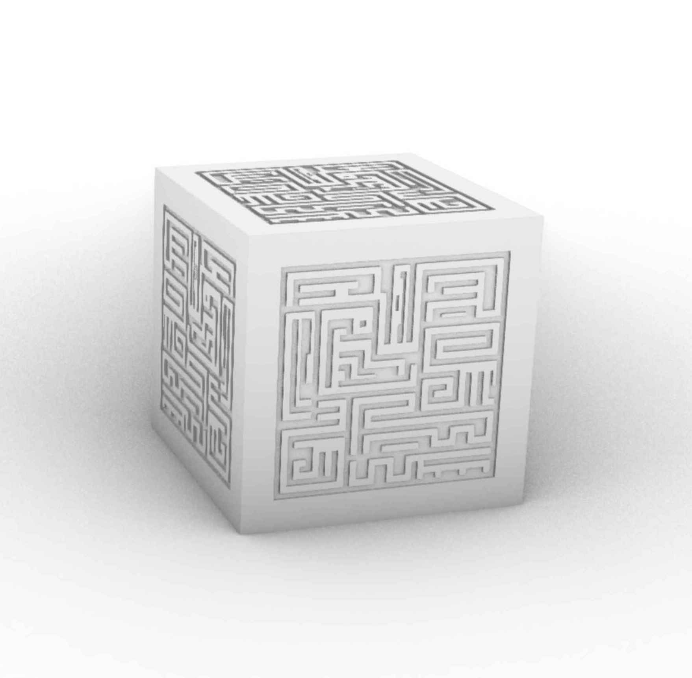
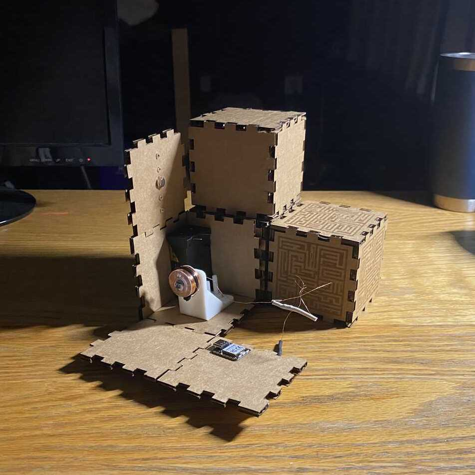
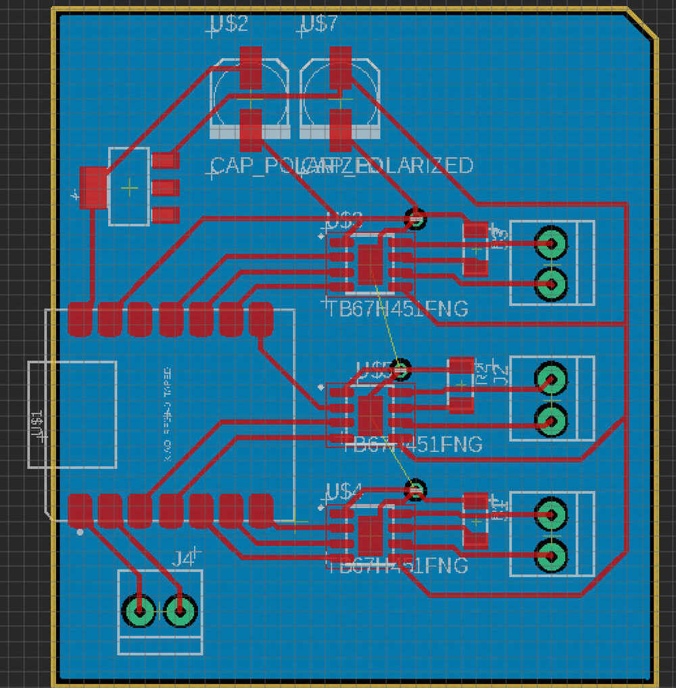

Final Project
My goal for how to make is to reproduce these blocks from Castle in the Sky:
Inspirations
The idea came about from a bunch of sources. I love clean designs with beautiful mechanisms. When I first saw Miana's self replicating robots during a CBA lab meeting, the idea of simple geometric cells with controllable embeded circuits really got my attention, and of course the self replication so amazing and brain numbing, I was really captivated.
As a side project to learn more about milling, I had planned to mill out the design of one of these cubes out of aluminum. Seperately, during freshman year, I took a seminar on making things and made a brushless motor. At the same time, I have taken a bunch of classes on basic circuits building and analysis, but I don't feel like I have much practical design knowledge or experience. All of these came together when I was brainstorming for final projects and I thought, what if I could make the cubes, add a linear version of the magnetic actuators from the brushless motor, and control everything using embeded systems
The general idea is to create cm scale cubes with mounted electromagnets and perment magnets that can move each other around.
Beyond the hardware and fabrication, I have a couple ideas:
- Create an interactable setup to control the blocks position
- 15 block puzzle solver, the blocks flash a sequence corresponding to an initial state of the 15 block puzzle and solve it(some graph search approach)
- Generalize 15 block solver to 3D (stretch goal)
- Create a declining system where the blocks rearrange themselves to charge the most depleted cell until it stops working
- some kind of assembly into interesting geometry (more vague).
progress so far
Simulation
Models

Prototypes

Electronics
